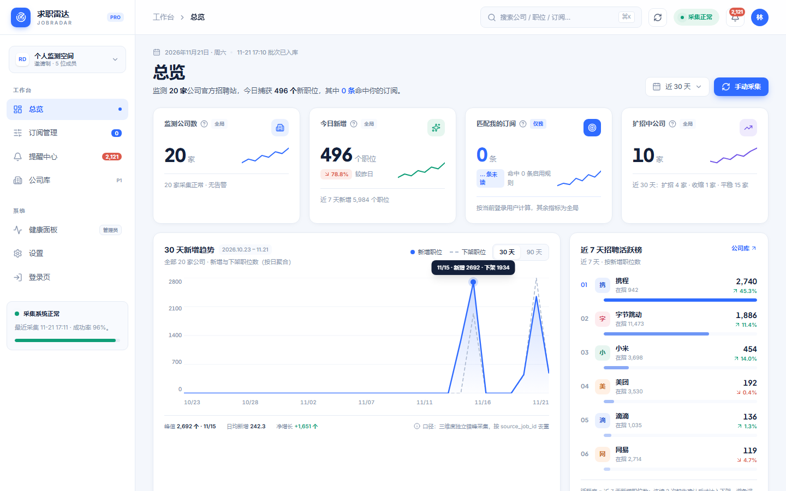
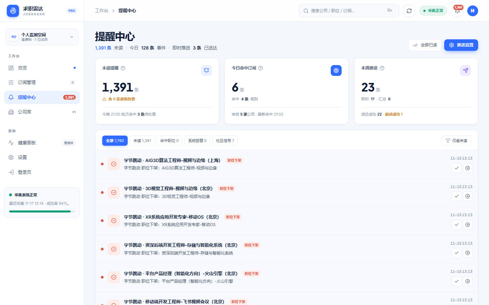
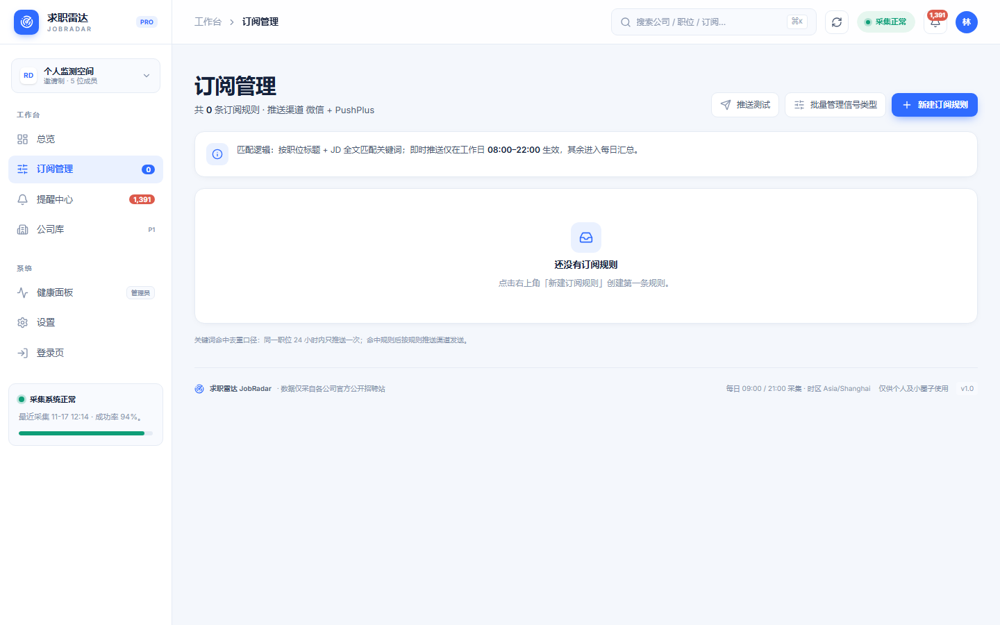
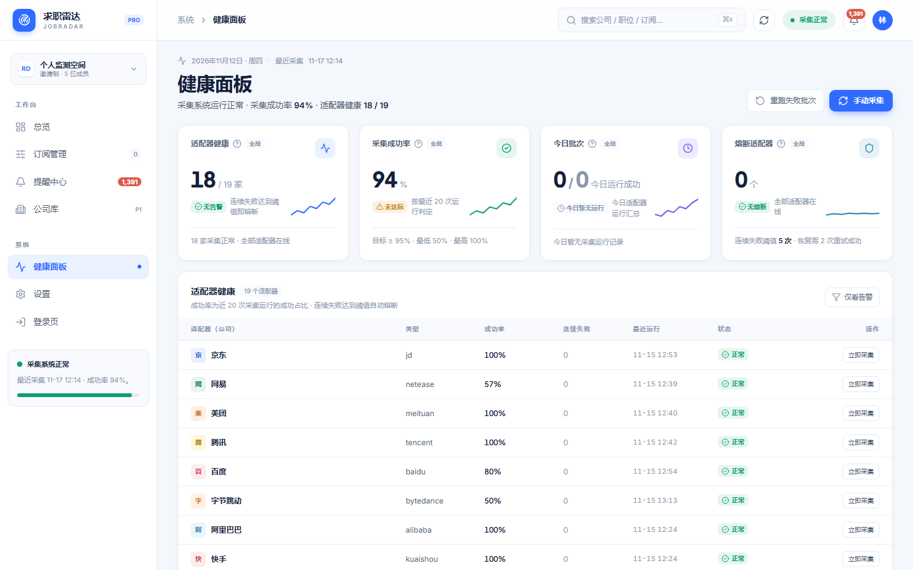

个人向大厂招聘监测系统。
定时采集公开社招职位 → 快照对比 → 订阅规则匹配 → 定向推送 → Web 查看分析，
并行追踪脉脉 / 牛客 / V2EX 社区信号，把散落的招聘动态收敛成一张可行动的情报台。




18 家已验证启用，按公司公开接口分别适配；统一契约接入，同站点 2.2s 最小请求间隔。
与上一份职位快照逐条对比，识别新增、变更、重新上架与下架四类事件，不漏一次变动。
按关键词、城市与职位全字段建立订阅，命中后按用户聚合，避免同一事件重复打扰。
PushPlus / 企业微信机器人 / 日志三通道；10 分钟窗口聚合，失败重试 3 次，每日 21:30 汇总。
脉脉、V2EX、牛客三源公开帖独立采集，按公司别名归属，归类为内推 / 面经 / 招聘等信号。
时效（默认 3 天）与价值（最短正文、拒营销纯链接）双闸 fail-closed；低置信评论隔离审阅不推送。
成功率、失败任务、队列与信号源熔断状态一屏可见，异常源单独重试不影响主采集链。
总览 / 订阅 / 提醒 / 公司库 / 健康 / 设置，FastAPI 直接托管纯静态多页，无需 npm 构建。
Python + FastAPI + SQLite，176 项离线测试全通过；Playwright 逐页实弹断言，Docker 一体部署。
这是个人向内部工具，当前仅展示介绍与截图，不提供公开实例。
如果您想了解采集适配、信号治理或推送链路的实现细节，可以查看工程详解页，也欢迎留言交流。